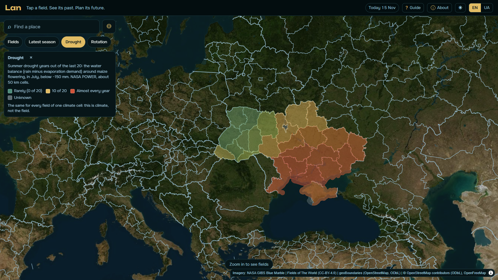
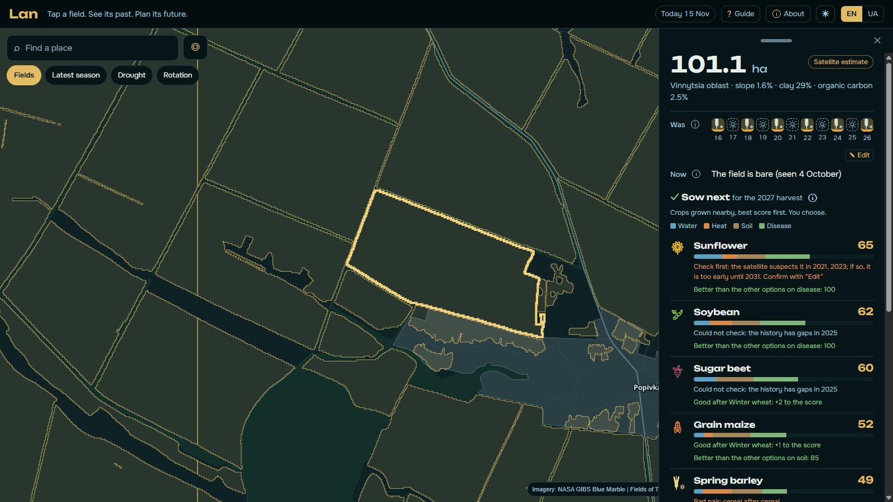
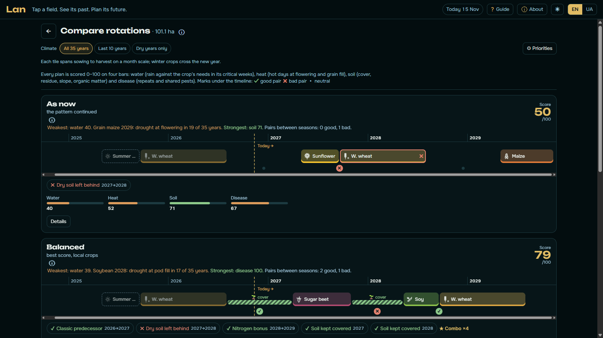

A crop-rotation planner for any field in Ukraine and the 48 contiguous US states, built on NASA Earth observations.
"Lan" is Ukrainian for a large farm field. Ukraine is our home; the method is not tied to it.

Lan's drought layer: summers out of the last 20 with a July water balance below −150 mm (NASA POWER). Rare in the west, almost every year in the south-east.
Every field already has its outline. The card shows eleven seasons of history, ranks the next crop and says why.

"As now", "Balanced", "Drought-proof" and the farmer's own plan, scored on the same four bars. Good and bad crop sequences show up as combos, each with its reason and source.

winter / summer / bare agreement with independent KPI / World Bank crop maps (2019–2024), 24,626 held-out field-seasons in Cherkasy. One held-out tile per zone:
| Dnipropetrovsk, central steppe | 95.0 % |
| Kharkiv, east | 94.2 % |
| Volyn, north-west | 88.6 % |
| Lviv, west | 87.2 % |
| Odesa, dry south | 79.3 % |
Limits: weather ≈ 50 km, soil 250 m; no nitrogen, weeds, pests or prices. Lan supports an agronomist; it does not replace one.
Farmers and agronomists planning the next seasons — on a phone, with nothing to install. The farmer has the final say: correct any season and the plan recalculates at once.
Team Lan, two people. The product idea and every decision are the team's. An SI coding assistant (Claude Code) wrote code and text drafts and suggested reading history from greenness curves; recommendations come from transparent rules, not a language model.